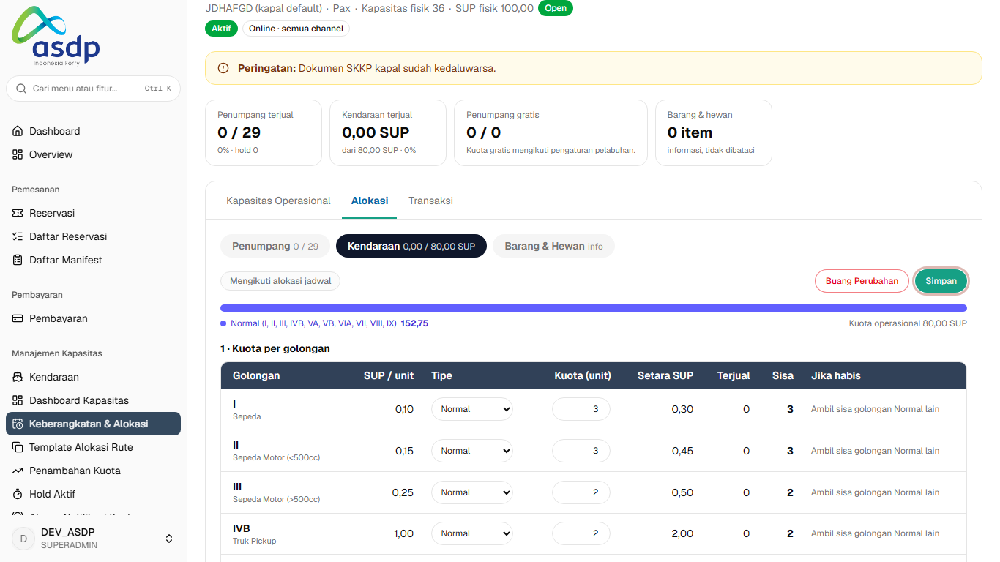
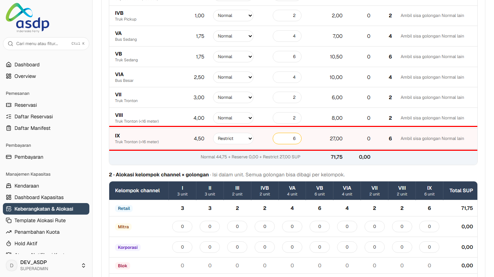
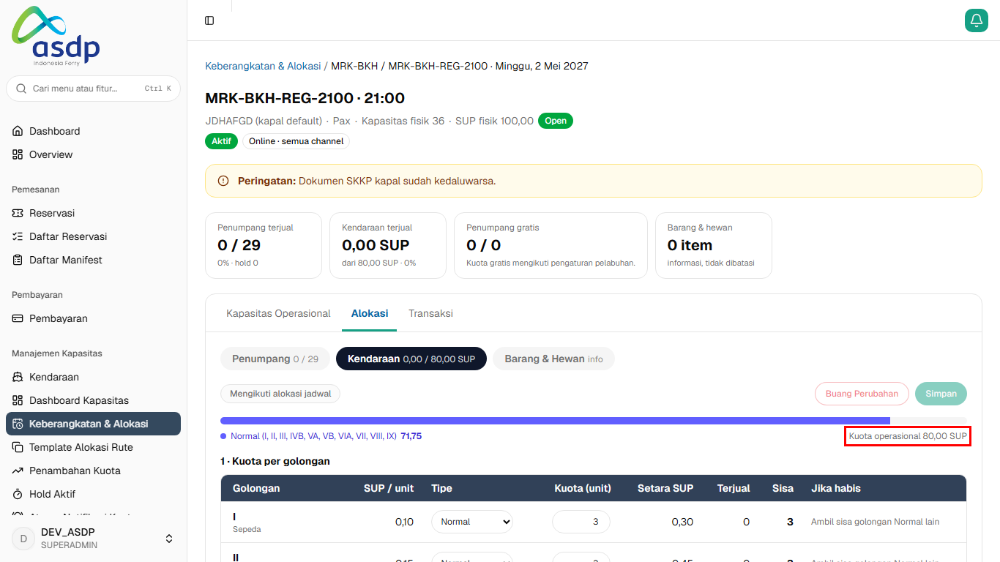
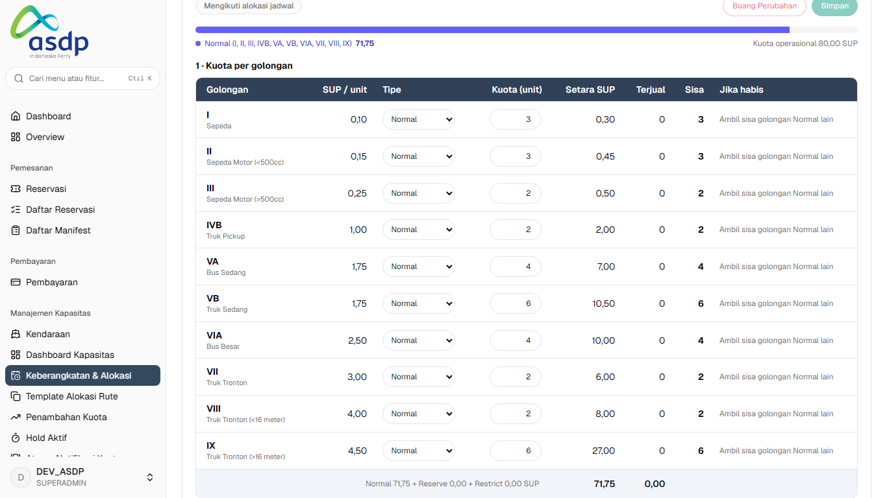

KV-T01 — Tombol Simpan tetap aktif walau alokasi kendaraan melebihi kuota operasional SUP Langkah: 1. Buka menu Keberangkatan & Alokasi 2. Pilih rute MERAK - BAKAUHENI, tanggal 2027-05-02 3. Klik jadwal MRK-BKH-REG-2100 → tab Alokasi → sub-tab Kendaraan 4. Isi Kuota golongan IX = 24 unit Ekspektasi: Tombol Simpan terkunci / ada pesan, karena total 152.75 SUP > kuota operasional 80.00 SUP Aktual: Total jadi 152.75 SUP (tanda ⚠), tombol Simpan tetap aktif; baru ditolak server ("FCAP-ALLOCATION-EXCEEDS-QUOTA") setelah diklik

[TEMUAN] KV-T01 — Tombol Simpan tetap aktif walau alokasi kendaraan melebihi kuota operasional SUP
Langkah:
1. Buka menu Keberangkatan & Alokasi
2. Pilih rute MERAK - BAKAUHENI, tanggal 2027-05-02
3. Klik jadwal MRK-BKH-REG-2100 → tab Alokasi → sub-tab Kendaraan
4. Isi Kuota golongan IX = 24 unit
Ekspektasi: Tombol Simpan terkunci / ada pesan, karena total 152.75 SUP > kuota operasional 80.00 SUP
Aktual: Total jadi 152.75 SUP (tanda ⚠), tombol Simpan tetap aktif; baru ditolak server ("FCAP-ALLOCATION-EXCEEDS-QUOTA") setelah diklik
(bukti: hasil\bukti\KV-T01_20261111-170323.png)KV-T02 — Kolom "Jika habis" tidak ikut berubah saat Tipe diganti (sebelum Simpan) Langkah: 1. Buka menu Keberangkatan & Alokasi 2. Pilih rute MERAK - BAKAUHENI, tanggal 2027-05-02 3. Klik jadwal MRK-BKH-REG-2100 → tab Alokasi → sub-tab Kendaraan 4. Ubah Tipe golongan IX menjadi Restrict (belum klik Simpan) Ekspektasi: Kolom "Jika habis" langsung menampilkan "Tolak (tidak ambil Normal)" sesuai keterangan "Restrict … habis → ditolak" Aktual: Kolom "Jika habis" masih "Ambil sisa golongan Normal lain" (baru berubah setelah disimpan)

[TEMUAN] KV-T02 — Kolom "Jika habis" tidak ikut berubah saat Tipe diganti (sebelum Simpan) Langkah: 1. Buka menu Keberangkatan & Alokasi 2. Pilih rute MERAK - BAKAUHENI, tanggal 2027-05-02 3. Klik jadwal MRK-BKH-REG-2100 → tab Alokasi → sub-tab Kendaraan 4. Ubah Tipe golongan IX menjadi Restrict (belum klik Simpan) Ekspektasi: Kolom "Jika habis" langsung menampilkan "Tolak (tidak ambil Normal)" sesuai keterangan "Restrict … habis → ditolak" Aktual: Kolom "Jika habis" masih "Ambil sisa golongan Normal lain" (baru berubah setelah disimpan) (bukti: hasil\bukti\KV-T02_20261111-170326.png)
KV-T03 — Total alokasi kendaraan lebih kecil dari kuota operasional SUP Langkah: 1. Buka menu Keberangkatan & Alokasi 2. Pilih rute MERAK - BAKAUHENI, tanggal 2027-05-02 3. Klik jadwal MRK-BKH-REG-2100 → tab Alokasi → sub-tab Kendaraan 4. Bandingkan baris ringkasan "Normal + Reserve + Restrict" dengan "Kuota operasional … SUP" Ekspektasi: Total alokasi = kuota operasional (80.00 SUP), atau sisa SUP ditampilkan/dijelaskan Aktual: Total alokasi 71.75 SUP, kuota operasional 80.00 SUP → 8.25 SUP tidak teralokasi ke golongan mana pun

[TEMUAN] KV-T03 — Total alokasi kendaraan lebih kecil dari kuota operasional SUP Langkah: 1. Buka menu Keberangkatan & Alokasi 2. Pilih rute MERAK - BAKAUHENI, tanggal 2027-05-02 3. Klik jadwal MRK-BKH-REG-2100 → tab Alokasi → sub-tab Kendaraan 4. Bandingkan baris ringkasan "Normal + Reserve + Restrict" dengan "Kuota operasional … SUP" Ekspektasi: Total alokasi = kuota operasional (80.00 SUP), atau sisa SUP ditampilkan/dijelaskan Aktual: Total alokasi 71.75 SUP, kuota operasional 80.00 SUP → 8.25 SUP tidak teralokasi ke golongan mana pun (bukti: hasil\bukti\KV-T03_20261111-170329.png)
KV-T04 — Keterangan menyebut golongan disatukan, tapi tabel menampilkannya terpisah Langkah: 1. Buka menu Keberangkatan & Alokasi 2. Pilih rute MERAK - BAKAUHENI, tanggal 2027-05-02 3. Klik jadwal MRK-BKH-REG-2100 → tab Alokasi → sub-tab Kendaraan 4. Baca keterangan "Golongan disatukan per angka romawi … (IVA/IVB, VA/VB, VIA/VIB)" 5. Lihat daftar golongan di tabel Ekspektasi: Pasangan golongan dengan SUP sama tampil sebagai satu baris (mis. "VA/VB") Aktual: Tabel berisi I, II, III, IVB, VA, VB, VIA, VII, VIII, IX; pasangan yang tampil terpisah: VA & VB

[TEMUAN] KV-T04 — Keterangan menyebut golongan disatukan, tapi tabel menampilkannya terpisah Langkah: 1. Buka menu Keberangkatan & Alokasi 2. Pilih rute MERAK - BAKAUHENI, tanggal 2027-05-02 3. Klik jadwal MRK-BKH-REG-2100 → tab Alokasi → sub-tab Kendaraan 4. Baca keterangan "Golongan disatukan per angka romawi … (IVA/IVB, VA/VB, VIA/VIB)" 5. Lihat daftar golongan di tabel Ekspektasi: Pasangan golongan dengan SUP sama tampil sebagai satu baris (mis. "VA/VB") Aktual: Tabel berisi I, II, III, IVB, VA, VB, VIA, VII, VIII, IX; pasangan yang tampil terpisah: VA & VB (bukti: hasil\bukti\KV-T04_20261111-170332.png)
Error: tombol Kembalikan semua harus ada di sub-tab Kendaraan | expect(received).toBe(expected) // Object.is equality | Expected: true | Received: false
Tidak ada gangguan koneksi.
Tidak ada.
| No | Berkas | Test | Jenis | Status | Detik |
|---|---|---|---|---|---|
| 1 | UI\keberangkatan-kendaraan-ubah.spec.ts | Keberangkatan — Alokasi Kendaraan (ubah data + restore) > [Positif] KV-10 simpan Mitra 1 → Retail berkurang, label "override", bertahan setelah reload; Kembalikan semua → pulih | PEMERIKSAAN | LULUS | 11.2 |
| 2 | UI\keberangkatan-kendaraan-ubah.spec.ts | Keberangkatan — Alokasi Kendaraan (ubah data + restore) > [Edge] KV-11 Mitra = tepat kuota golongan (batas) → tersimpan, Retail golongan jadi 0 | PEMERIKSAAN | LULUS | 9.0 |
| 3 | UI\keberangkatan-kendaraan-ubah.spec.ts | Keberangkatan — Alokasi Kendaraan (ubah data + restore) > [Negatif] KV-12 Mitra melebihi kuota golongan → tidak boleh tersimpan melebihi | PEMERIKSAAN | LULUS | 9.0 |
| 4 | UI\keberangkatan-kendaraan-ubah.spec.ts | Keberangkatan — Alokasi Kendaraan (ubah data + restore) > [Negatif] KV-13 kuota golongan melebihi kuota operasional SUP → ditolak server, data tidak berubah | PEMERIKSAAN | LULUS | 9.4 |
| 5 | UI\keberangkatan-kendaraan-ubah.spec.ts | Keberangkatan — Alokasi Kendaraan (ubah data + restore) > [Positif] KV-14 kurangi kuota golongan 1 unit → Setara SUP & total turun sebesar SUP/unit | PEMERIKSAAN | LULUS | 10.1 |
| 6 | UI\keberangkatan-kendaraan-ubah.spec.ts | Keberangkatan — Alokasi Kendaraan (ubah data + restore) > [Positif] KV-15 tipe Restrict disimpan → "Jika habis" = Tolak; Normal → "Ambil sisa golongan Normal lain" | PEMERIKSAAN | LULUS | 11.0 |
| 7 | UI\keberangkatan-kendaraan-ubah.spec.ts | Keberangkatan — Alokasi Kendaraan (ubah data + restore) > [Positif] KV-16 "Kembalikan semua ke jadwal" dari sub-tab Kendaraan juga memulihkan override Penumpang | PEMERIKSAAN | GAGAL | 11.0 |
| 8 | UI\keberangkatan-kendaraan.spec.ts | Keberangkatan — Alokasi Kendaraan (read-only) > [Positif] KV-01 Setara SUP = kuota unit × SUP/unit untuk setiap golongan | PEMERIKSAAN | LULUS | 3.6 |
| 9 | UI\keberangkatan-kendaraan.spec.ts | Keberangkatan — Alokasi Kendaraan (read-only) > [Positif] KV-02 ringkasan Normal + Reserve + Restrict = jumlah Setara SUP semua golongan | PEMERIKSAAN | LULUS | 3.3 |
| 10 | UI\keberangkatan-kendaraan.spec.ts | Keberangkatan — Alokasi Kendaraan (read-only) > [Positif] KV-03 Retail = kuota golongan − Mitra − Korporasi; Total kolom = kuota golongan | PEMERIKSAAN | LULUS | 5.1 |
| 11 | UI\keberangkatan-kendaraan.spec.ts | Keberangkatan — Alokasi Kendaraan (read-only) > [Positif] KV-04 preview: isi Mitra 1 → Retail golongan langsung berkurang 1 (belum disimpan) | PEMERIKSAAN | LULUS | 3.0 |
| 12 | UI\keberangkatan-kendaraan.spec.ts | Keberangkatan — Alokasi Kendaraan (read-only) > [Negatif] KV-05 input Mitra: negatif → 0, desimal → bilangan bulat, huruf ditolak | PEMERIKSAAN | LULUS | 3.4 |
| 13 | UI\keberangkatan-kendaraan.spec.ts | Keberangkatan — Alokasi Kendaraan (read-only) > [Positif] KV-06 ubah Tipe ke Reserve/Restrict → ringkasan SUP berpindah kategori (belum disimpan) | PEMERIKSAAN | LULUS | 3.1 |
| 14 | UI\keberangkatan-kendaraan.spec.ts | Keberangkatan — Alokasi Kendaraan (read-only) > [Positif] KV-07 Buang Perubahan mengembalikan kuota golongan & ringkasan | PEMERIKSAAN | LULUS | 3.3 |
| 15 | UI\keberangkatan-kendaraan.spec.ts | Keberangkatan — Alokasi Kendaraan (read-only) > [Temuan] KV-T01 kuota golongan melebihi kuota operasional SUP → seharusnya Simpan terkunci | PEMERIKSAAN | LULUS | 6.4 |
| 16 | UI\keberangkatan-kendaraan.spec.ts | Keberangkatan — Alokasi Kendaraan (read-only) > [Temuan] KV-T02 tipe Restrict: kolom "Jika habis" seharusnya langsung "Tolak" sebelum disimpan | PEMERIKSAAN | LULUS | 3.2 |
| 17 | UI\keberangkatan-kendaraan.spec.ts | Keberangkatan — Alokasi Kendaraan (read-only) > [Temuan] KV-T03 total alokasi SUP seharusnya = kuota operasional kendaraan [perlu konfirmasi] | PEMERIKSAAN | LULUS | 2.9 |
| 18 | UI\keberangkatan-kendaraan.spec.ts | Keberangkatan — Alokasi Kendaraan (read-only) > [Temuan] KV-T04 keterangan "golongan disatukan (VA/VB …)" seharusnya sesuai isi tabel [perlu konfirmasi] | PEMERIKSAAN | LULUS | 2.6 |